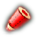
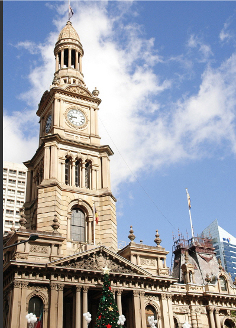

틀린 그림 찾기서비스는 웹접근성을 준수하지 않고 있으므로 클릭하시면 건너뛸 수 있습니다.


<< 찾은 개수 표시
점수 :
0
점
PLAY
------ 틀린 그림 찾기 기능 ------
- 정답 click시 O표시 및 하단에 표시됨
- 오답 click시 X표시
- TIMER 기능(PLAY 버튼 클릭), TIMER 시간 변경 가능
- 시작 전에 이미지 blur(흐리게) 강도 조절 기능
- 가상 커서 기능
- 점수 기능 (정답시 +20점, 오답시 -20점)
------ 운영시 퍼블리셔 작업 ------
- 정답 부분에 이미지맵 처리, O이미지(정답) absolute 위치 처리